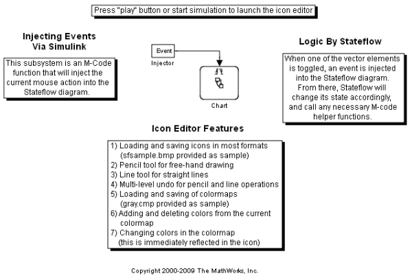
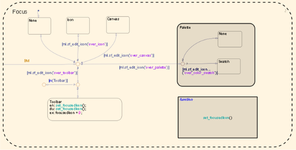
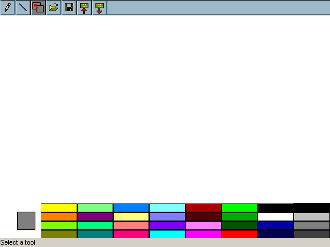

Icon Editor GUI
This model demonstrates how MATLAB®, Simulink®, and Stateflow® can be used together to create and edit graphical icons. On running the simulation, a drawing window will appear. You can then select from a palette of 32 colors to create your own icons.
When drawing in the window, an event is injected into the Stateflow chart. Stateflow reacts by changing its state accordingly and calling the appropriate M-code helper functions. For example, when you draw a line, a Simulink event is injected into the Stateflow chart. Stateflow then transitions to the LineDraw state and calls the appropriate MATLAB graphical functions to render the line on the drawing window.
  